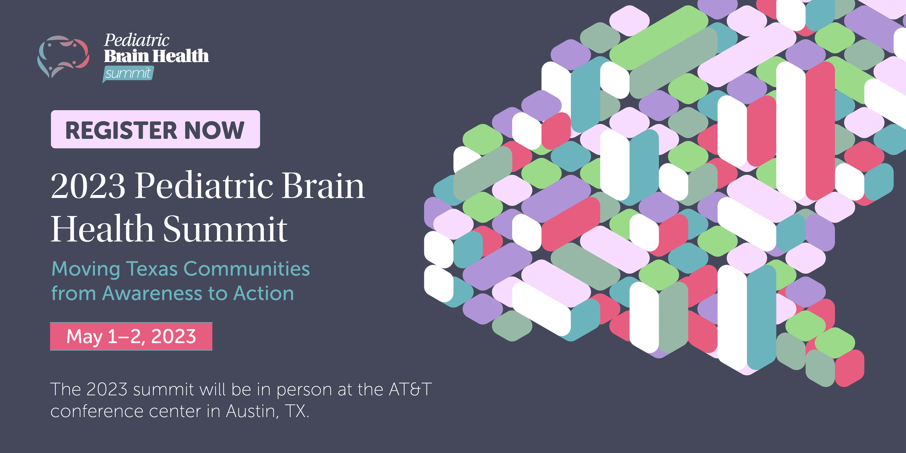

For more information, contact Dr. Dorothy Mandell at dmandell@utsystem.edu or Sarah Presti at spresti@utsystem.edu
The 2023 Summit is a collaboration between the Department of State Health Services, the Texas Department of Family and Protective Services, the Hackett Center for Mental Health of the Meadows Mental Health Policy Institute, the St. David’s Foundation, The University of Texas System, and The University of Texas Health Science Center at Tyler.
May 1-2, 2023
The 2023 summit will be in person in Austin, TX.

The event – which is free to attend – is part of the Texas Pediatric Brain Health Initiative. This initiative is a multi-sector, multi-agency collaboration focused on the prenatal to three-year-old developmental window. The purpose of the initiative is to use the current science on pediatric brain development to help inform and support programs that promote community resilience and optimal development in Texas’ children.
We are at capacity for in-person registration!
Please stay tuned for virtual option.
CEs for multiple disciplines will be provided for this event.
Agenda
Day 1, 5/1/2023 | Grand Ballroom, AT&T Conference center
8:00 AM - 9:00 AM
Registration
9:00 AM - 09:30 AM
Welcome & Thematic Discussion
Dorothy Mandell, PhD, Associate Professor of Community Health, School of Health Professions, UT Tyler
9:30 AM - 10:30 AM
Families’ Perspective on Care that is Trusted and Coordinated
Cindy Paz, Program Director at University of Houston Community Health Workers Initiative
Olivia Ruiz
Moderator: Dorothy Mandell, PhD, Associate Professor of Community Health, School of Health Professions, UT Tyler
10:30 AM - NOON
Trauma Informed Care to Support Families
Hilda Loria, MD, MPH, FAAP, Center Director, Rees-Jones Center for Foster Car Excellence Assistant Professor of Pediatrics, UT Southwestern Medical Center
Carly Grimes
Kathryn Dumond
Moderator: David Lakey, M.D., Vice Chancellor for Health Affairs and Chief Medical Officer, The University of Texas System, Senior Adviser to the President, UT Health Science Center at Tyler
NOON - 1:30 PM
Lunch and Networking
1:30 PM - 3:00 PM
The Ins and Outs of Implementing Trauma Informed Care: Examples from healthcare
Roxana L. Cruz, MD FACP; Director of Medical and Clinical Affairs, Texas Association of Community Health Centers
Aniela Z.G. Brown, MSW; TIC Clinical Coordinator
Moderator: KIM
3:00 PM - 3:30 PM
Break & Data Walk
3:30 PM - 5:00 PM
When the Conversation is Hard
Erin Donovan, PhD, Professor of Communication Studies in the Moody College of Communication, Director of Interdisciplinary Education for the Center for Health Communication, at the University of Texas at Austin.
Moderator: Dorothy Mandell, PhD, Associate Professor of Community Health, School of Health Professions, UT Tyler
Day 2 | 5/2/2023 | Grand Ballroom, AT&T Conference center
8:00 AM - 8:30 AM
Registration
8:30 AM - 9:00 AM
Welcome & Thematic Discussion
Dorothy Mandell, PhD, Associate Professor of Community Health, School of Health Professions, UT Tyler
9:00 AM - 10:30 AM
Keynote Address
Christopher S. Greeley, MD, MS, FAAP; Chief, Division of Public Health Pediatrics, Texas Children’s Hospital; Vice Chair for Community Health, Baylor College of Medicine
Moderator: SASHA
10:30 AM - 12:00 PM
Texas Example of Multi-System Coordination
Patricia Rosenlund, M.S., Easterseals RGV Executive Director
Adam Rios, Help Me Grow Coordinator, Easterseals Rio Grande Valley
Moderator: CLAIRE
12:00 PM - 1:30 PM
Lunch and Networking
1:30 PM - 3:00 PM
Behavioral Health Integration & Support Across Systems: Coaching, consultancy, therapy
Kara Hill, MHA, Director, Integrated Health Care Initiative
Holly Gursslin M.Ed., NCC, LPC, Senior Project Coordinator, Early Childhood Technical Assistance Coordinator
Hani Talebi, PhD LSSP; Chief Clinical Officer; SVP, Health Systems Integration
Moderator: KATY
The Pediatric Brain Health Summit is part of the pediatric brain health initiative, a multi-sector, multi-agency collaboration focused on the prenatal to three-year-old developmental window. The purpose of the initiative is to use the current science on pediatric brain development to help inform and support programs that promote community resilience and optimal development in Texas’ children.